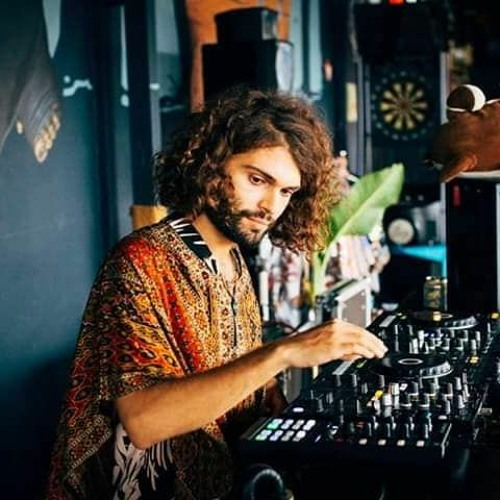

Photographe/Designer et violoniste de formation,
le voyage se veut rêveur, envoûtant et invite à l'errance vers
les confins de la mystérieuse jungle enchantée,
à la découverte de tribus isolées et de leurs rituels magiques.
C'est à Kampôt, au Cambodge, en bordure de rivière Féerique que Keimø a
co-monté ses premières soirées et journées fantastiques sous le nom de KanoPi.
Récemment en collaboration avec le label Curuba et le label Tangerine, sa musique est
un mélange alchimique de sons venus des quatre coins de la terre sans frontière entre
les styles, formant un mélange à la fois psychédélique, hypnotique et cosmique mais
aussi solaire, entraînant et captivant. Groove, Émotion, et "Transe organico-chamanique"
se veulent de la partie.
Il s'est notamment produit aux côtés de Peter Power, EXZ, Kurup, El Búho, Lopal, Shimon, Ditti,
Psychotropiques, O/Y, Jaja, Mimi Love, Luca Musto, M.Rux, Blond::ish, Recondite, Rampue,
et bien d'autres...